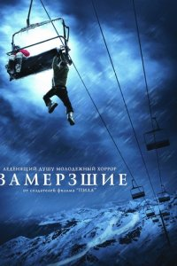

Операция «Фортуна»: Искусство побеждать
Операция «Фортуна»: Искусство побеждать Мой ужасный сосед
Мой ужасный сосед Черный ящик
Черный ящик Аферисты
Аферисты Крушение
Крушение Вавилон
Вавилон Чёрная Пантера: Ваканда навеки
Чёрная Пантера: Ваканда навеки



название
Замёрзшие
год
страна
жанр
время
1 час 29 мин
просмотр
в главных ролях
Про фильм
Сюжет фильма «Замерзшие» рассказывает о жутком происшествии на горнолыжном курорте. Как иногда бывает по непредвиденным обстоятельствам работу кресельных подъемников останавливают, и к сожалению, не всегда места пусты. Трое молодых ребят, двое сноубордистов и один лыжник решили отправится на вечернее катание.
Они подумать не могли о чудовищных последствиях своего решения и о том, какой ужас ожидает их впереди. Ребята застревают на подъемнике на большой высоте среди зимних гор. Оказавшись в ловушке, замерзшие молодые люди понимают, что зимние ночи суровы, холод и ветер погубят их, помощи ждать не от кого. Обдумывая план действий и постараться спастись, ребятам всего то нужно пережить страшную ночь… © ГидОнлайн

Расскажи друзьям
Название
В оригинале
Что еще посмотреть
 Остаться в живых
Остаться в живых Теория лжи
Теория лжи Потустороннее
Потустороннее Комментирование этого фильма доступно
Комментирование этого фильма доступно 
Фильм крутой в своем жанре,держит в напряжении до конца.
Как бы тут не рассуждали..если бы,да кабы….Но у героев не было выхода,либо волки сожрут,либо смерть от обморожения. Девке повезло,потому что….смотрите сами…..Десятка для такого триллера!
Слишком много недочётов и неточностей:
Страховочный трос не мог оборваться от веса одного человека,они не додумались посмотреть под седушку,которая была закреплена стяжками
[пип] полная. Посмотреть конечно можно. Но волков, которые ошиваются поблизости от того места, где люди тысячами ходят не существует. Также за последние пятьсот лет вывелись волки, которые нападают на людей. Волки могут напасть на собак, лошадей, свиней, но не людей. Так как твари они очень сообразительные и знают, что люди потом отомстят и истребят всю их стаю. Также почему сожрав двоих парней, они не сожрали и девушку. Нестыковок и притягивания за уши слишком много.
если откинуть все глупости, нестыковки, банальность и искусственно интригующее приключение трёх халявщиков то фильм можно разочек посмотреть , хотя лично я бесился
, хотя лично я бесился  во время фильма от действии героев которые….
во время фильма от действии героев которые….  сами увидете 6/10
сами увидете 6/10
Елена в спец одежде не так уж и трудно закинуть ноги на трос, в армейке приходилось в подобном случае перелазить по канату, в полной военной амуниции) за Мор.Пех!!! В крайнем случае смотря какая высота, можно было смастерить канат из имеющих при себе вещах и сообща конечно, мы так с пацами с 3 его этажа за пивом прыгали) а так можно посмотреть для развития навыков в экстримальных ситуациях, как бы вы повели себя
Для создателей фильма «Пила» , мяса нету так что это способ привлечь людей к просмотру. Фильм снят тремя камерами. Глупость театральных лиц зашкаливает.
Фильм
Нормальный фильм. Все такие деловые, перед экранами легко рассуждать. От растерянности и безысходности ребята делали не то что нужно, потому всё так случилось. А кто хоть раз застревал на подъёмнике, знает как там реально холодно висеть, даже 10 минут, когда ветер выдувает всё тепло((( Мне понравилось, хотя жуть с волками((
Очень ржачный фильм хД
Масса тупых моментов, такое ощущение что у героев очень низкий уровень IQ
Ничего страшного в этом фильме нет, советую его посмотреть если соскучились по выносу мозга…
(с) По моему режиссер девушка :D Ну кто понял о чём я, тот понял ;)
Фильм класс, посмотреть стоит, [спойлер]


Фильм можно посоветовать только на один раз и только в том случае если вам дико скучно и больше нечего посмотреть. Глупо все! У меня семилетний ребенок увидел кадр где он по тросу ползет и спросила «мама а почему дядя не держится ногами»….Если бы не тупость режиссера, герои спаслись бы в первые пару часов и фильм бы не состоялся. Ставлю 1 бал из 10.
Зарегестрировался только для того,чтобы прокомментировать данный фильм.Вообще есть немного фильмов которые можно смотреть много раз,это один из них.Держит в напряжении все время.Идея потрясающая,актеры сыграли восхитительно.Моментами мурашки идут по коже(оссобенно когда спрыгнул вниз первый герой)а если идут мурашки то это чего-то стоит!!!Вообщем я в восторге.Ситуация-врагу не пожелаешь
да не, норм фильм ) в стиле «Руин». ребята, я когда смотрел передачу О счастливчик или Кто хочет стать миллионером, тоже больше половины отгадывал. Когда находишься там, мозг отключается, да еще и на морозе, так что не осуждайте и не рассусоливаете о том какие бы смелые/сильные/ловкие/рассчетливые были бы вы в данной ситуации ))) не закинул он ноги на трос только потому что он дрищ и доходяга, но с другой сторогы, как тогда он прополз столько ) в общем, рекомендую к просмотру на 1 раз. 7 из 10.
Да бред полный! В смысле, понятно почему это не основано на реальных событиях. Потому что я сразу подумала о том, что снять куртки и штаны и связать их и спуститься. ничего.померзли бы. Плюс с пристегнутой доской,да еще и на одной ноге, висеть , у нее бы уже нога отмерзла.
а да! дополнительная тупость,это то что им холодно, а они такие сидят без капюшонов, расстегнуты молнии и пр. бреееееееееееееееед.
Самый мой любимый фильм 10/10
фильм реально страшный и актеры просто обалденные.
 Но , если на все это закрыть глаза, то фильм смотрибельный!
Но , если на все это закрыть глаза, то фильм смотрибельный! 

да, острый тросс.. что-то странно, волки.. тоже; курящие – и ни разу не закурили, когда стали мерзнуть; прыгать с такой высоты – только солдатиком, только прямые ноги, только хардкор..
однозначно смотреть
Хороший фильм. Со смыслом. Ставлю без раздумья 10.


Хороший и страшный.
Фильм максимум на 4 , не забивайте мозг, много ляпов и тупость героев поражает
Фильм хороший, он конечно не страшный, но посмотреть можно
Может со стороны и проще рассуждать о том, что бы сделал ты. И ряд ошибок, которые совершили ребята вроде им простительны. Но! В подобных условиях у человека срабатывает инстинкт самосохранения и мозг начинает работать 2 раза активнее и искать выход из критической ситуации. А тут напрочь отсутствуют какие-либо инстинкты…. Например, для начала хотя бы оглянуться вокруг и обдумать вариант с тросом. А не сразу сигать вниз (Ну или на крайний случай сиганул бы чуть пораньше, когда снегоуборочная машина подъехала. [спойлер] Но тогда не получилось бы фильма))) А так в принципе вечерок убить можно…5 из 10
Не Ужасы, но ужасный до жути. Похожий фильм Открытое море, Открытое море 2- не дай Бог попасть в такую ситуацию! Брррр
Нормальный фильм. Бывает и хуже. Ставлю 8 из 10.
5\10
Такая оценка только лишь потому, что тупость главных героев во многих ситуациях зашкаливает и выбешивает
Поставила 10 баллов,но..ужасов не ждите(ну если только ломанные кости входят в раздел ужасов)..фильм с 3-мя актерами (не считая волков),длинными диалогами между ними и нервным напряжением от безвысходности ситуации(не считая их тупости по задумке режиссера)..ну все же фильм понравился тем,что во время просмотра появилось много стоящих идей-как спастись..в жизни пригодится мало ли..